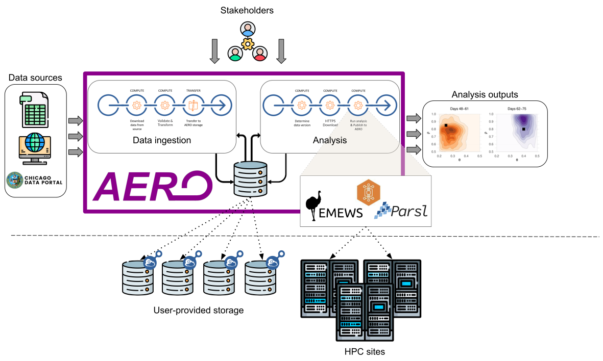

Data Streaming as a Service (DSaaS)
DSaaS is a service that enables users to upload, periodically update and share data between users.
Installation
CLI
List all available data
Create a data source
Get a specific source file
Creating verifier and modifier functions
# From dsaas_client/example.py
# Example of the verifier/modifier function
# NOTE:
# The function must:
# 1. Take (*args, **kwargs)
# 2. Return args, kwargs
# 3. For verifier: raise `Exception` if the verifier is failed
# 4. For modifier: Before returning, kwargs['file'] = modified_file
def verifier(*args, **kwargs):
# Your downloaded file will be found in kwargs['file']
# Ensure that you replace the `modified` file to kwargs['file']
return args, kwargs
from dsaas_client.api import source_file, register_function
try:
response = register_function(verifier)
assert response.get('code') == 200
function = response.get('function_id')
except Exception as e:
print(e)